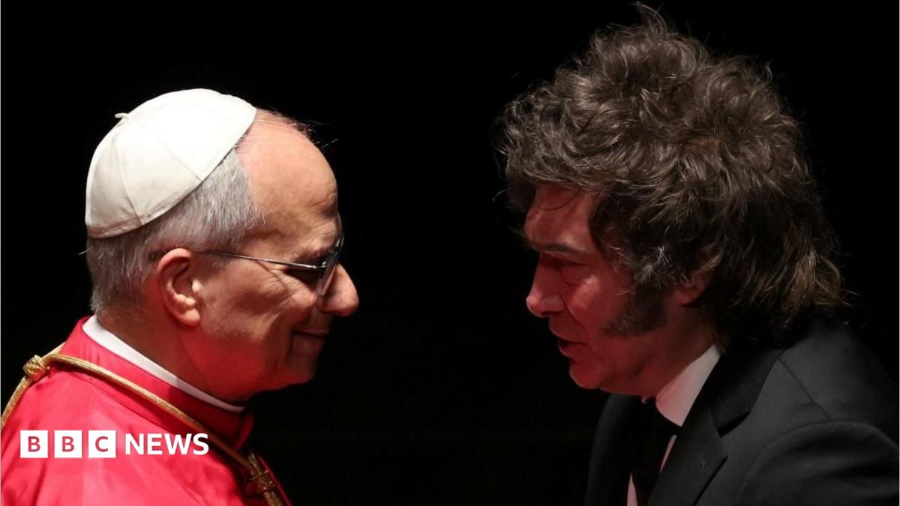

World · 09 Nov 2026
Pope delivers veiled rebuke of Milei's austerity measures

Pope Leo made the comments as he arrived in Argentina on the second leg of his Latin America tour.
Multiple independent publishers are reporting on the same development: Pope delivers veiled rebuke of Milei's austerity measures.
The available reports place the development in the World category. The accounts were compared for agreement on the central event rather than simply shared names or broad topics.
One of the available reports describes the development this way: Pope Leo made the comments as he arrived in Argentina on the second leg of his Latin America tour.
Readers should consult the linked source reports for additional context, updates and details that may change as the story develops.
Sources
This article was produced by the C. O. Eric AI Newsroom from the cited sources. It is published only after automated evidence and safety checks.